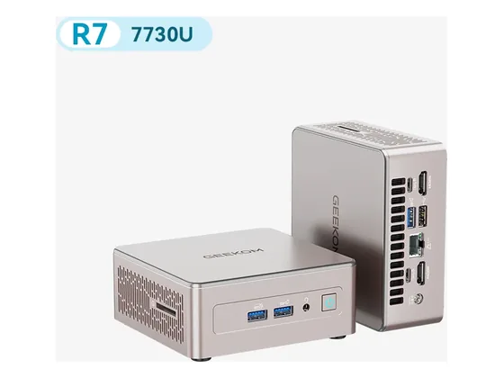
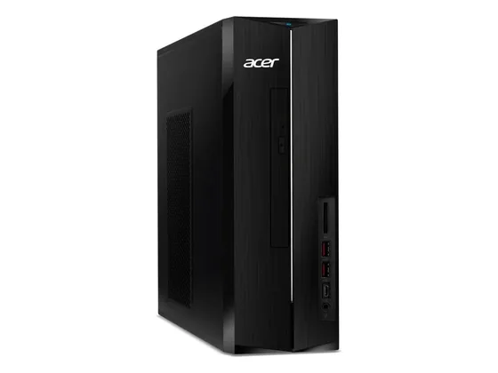
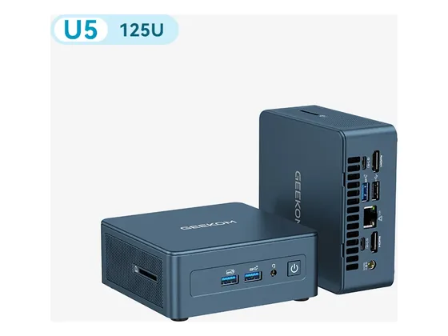

Apple Mac mini M6 : avis, tests et prix
Le verdict en une phrase. Minuscule, silencieux et très rapide : toujours le meilleur petit ordinateur de bureau, même si son prix a nettement augmenté.
Notre choix dans le top 10 Ordinateurs de bureau bureautique.

Pour qui ?
Vous voulez un ordinateur de bureau minuscule, silencieux et très rapide.
Vous voulez pouvoir ajouter de la mémoire ou du stockage plus tard.
Le consensus de la presse
Les 3 notes relevées sont identiques : 8,0/10. Dernier test relevé : septembre 2026.
Où l'acheter
La configuration peut différer d'un marchand à l'autre : vérifiez la fiche avant d'acheter. Liens d'affiliation : ils n'influencent ni les notes ni le classement.
Tous les tests recensés
Chaque ligne renvoie vers le test d'origine. Les notes sont converties sur 10 ; « test » signale un article sans note chiffrée. Notre méthode.
- Clubic8,0
- Engadget8,0
- Les Numériques8,0
- ComputerBasetest
- HardwareZonetest
- Notebookchecktest
- Press Starttest
- Wiredtest
Source du relevé : Synthèse CommentChoisir.
Les alternatives pour le même usage
Tout le top 10 →
Geekom A5Un mini-PC bien construit, quasi inaudible et très sobre : tout ce qu'il faut pour la bureautique, à moins de 500 €. N° 3 · Le petit budget
Acer Aspire XCUne tour compacte à prix serré, peu gourmande en énergie : la génération précédente avait été saluée pour son rapport qualité-prix. N° 4 · Le Core à prix doux
Geekom Mini IT12Un mini-PC Intel Core compact, à la connectique généreuse et facile à ouvrir. Son ventilateur s'entend presque toujours.Questions fréquentes
Que pense la presse de l'ordinateur Apple Mac mini M6 ?
La note presse moyenne est de 8,0/10, calculée sur 3 notes. Minuscule, silencieux et très rapide : toujours le meilleur petit ordinateur de bureau, même si son prix a nettement augmenté.
Quels sont les points faibles relevés par les tests ?
Prix en forte hausse ; Aucune évolutivité ; Bouton d'alimentation mal placé.
À qui s'adresse le modèle Apple Mac mini M6 ?
Vous voulez un ordinateur de bureau minuscule, silencieux et très rapide. À éviter si : vous voulez pouvoir ajouter de la mémoire ou du stockage plus tard.
Où l'acheter, et à quel prix ?
Prix relevés le 02/10/2026 : 1 034 € chez Amazon ; 1 049 € chez Darty. Les prix changent vite et la configuration peut différer d'un marchand à l'autre : seul le prix affiché par le marchand fait foi.